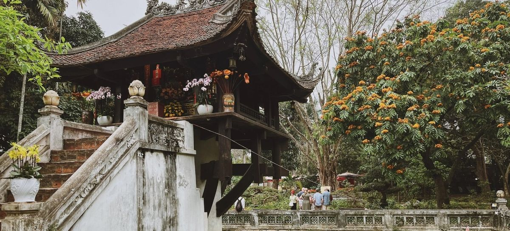

Địa danh CHÙA MỘT CỘT
Chùa Một Cột, tên chữ là Diên Hựu Tự, tọa lạc tại quận Ba Đình, thủ đô Hà Nội – trung tâm chính trị, văn hóa và lịch sử của cả nước. Chùa nằm trong khuôn viên khu di tích Chủ tịch Hồ Chí Minh, gần Lăng Bác, Phủ Chủ tịch và nhiều địa danh nổi tiếng khác. Đây là khu vực có vị trí rất thuận lợi cho việc tham quan, học tập và tìm hiểu về lịch sử – văn hóa dân tộc. Với vị trí đắc địa như vậy, chùa Một Cột không chỉ là nơi linh thiêng đối với người dân Hà Nội mà còn là điểm đến quen thuộc của du khách trong và ngoài nước.